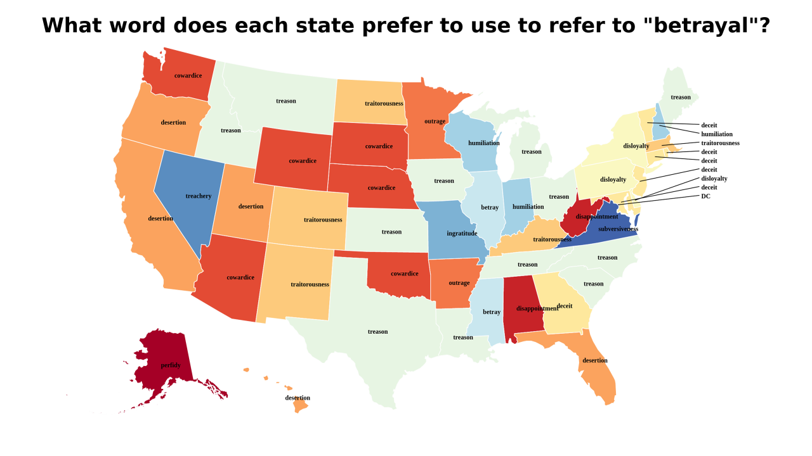
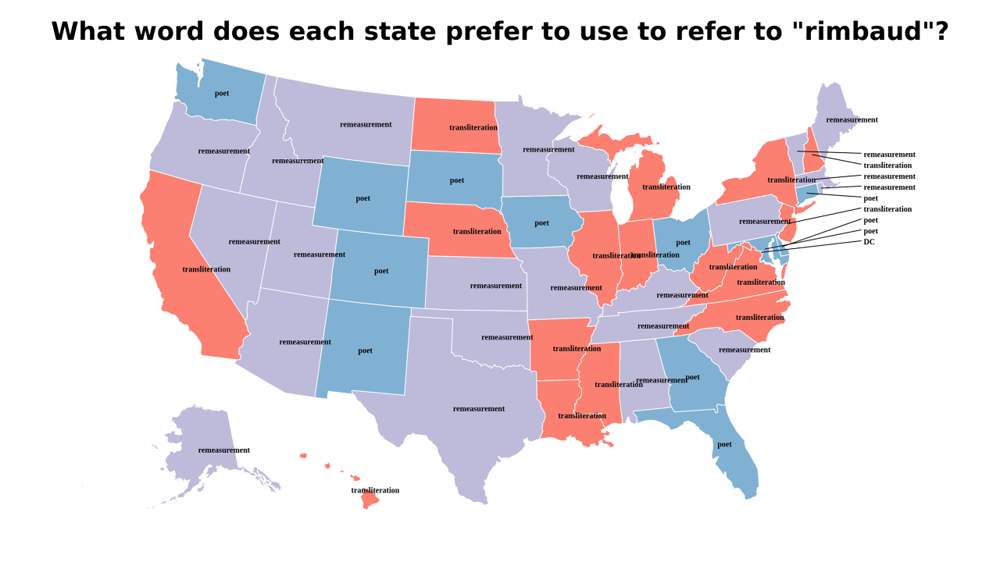
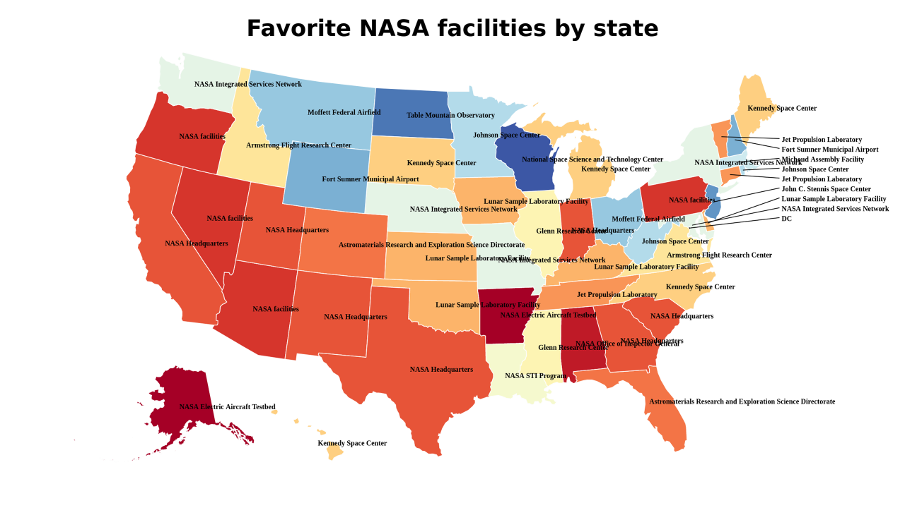

Fact maps!
2018-4-23 21:19:17

What word does each state prefer to use to refer to "betrayal"?
2018-4-23 19:19:16

What word does each state prefer to use to refer to "rimbaud"?
2018-4-23 18:19:20

Favorite NASA facilities by state
1
|
0